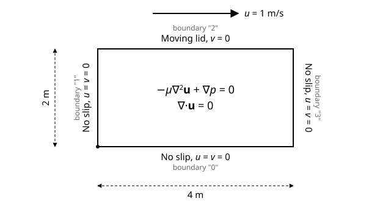
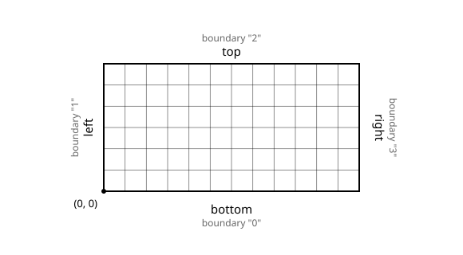

Overview
Creeping flow in a 2D lid-driven cavity.
In this tutorial, we solve the steady Stokes flow equations inside a two-dimensional lid-driven cavity. The lid-driven cavity is a classical benchmark problem in computational fluid dynamics where the top wall moves at a constant horizontal velocity while the remaining walls are stationary, driving a recirculating flow inside the domain.
The steady Stokes equations for an incompressible Newtonian fluid with no body forces are:
\(\nabla \cdot \mathbf{u} = 0\) and \(-\mu \nabla^{2} \mathbf{u} + \nabla p = \mathbf{0}\),
where \(\mathbf{u} = (u,v)\) is the velocity vector, \(p\) is the pressure and \(\mu\) is the
dynamic viscosity. In the FEAScript implementation below, we set the viscosity coefficient to
\(\mu = 1.0\) with the viscosity coefficient of the model (a number, or a function of
\(x\) and \(y\) for a varying viscosity).

Schematic of the 2D lid-driven cavity: horizontal velocity (u=1) at the top edge and no-slip condition (u=v=0) at the other edges.
The above schematic illustrates the problem domain and outlines the associated boundary conditions. To satisfy the Ladyzhenskaya–Babuška–Brezzi (LBB) inf-sup stability condition, FEAScript uses the Taylor-Hood mixed finite element formulation. In this approach, velocity is discretized with 9-node biquadratic (Q2) elements and pressure with 4-node bilinear (Q1) elements.
Below is a demonstration of how to use the FEAScript library to solve the Stokes lid-driven cavity problem in your web browser. You only need a simple HTML page to run this example where the following code snippets should be included. First, load the required external libraries:
<head> <!-- ...head region... --> <script src="https://cdnjs.cloudflare.com/ajax/libs/plotly.js/2.35.3/plotly.min.js"></script> <!-- ...rest of head region... --> </head>
We should then define the problem parameters, such as the model type, the mesh configuration and the boundary conditions. This is performed using the FEAScript API directly in the HTML file:
<body>
<!-- ...body region... -->
<script type="module">
import {
FEAScriptModel,
plotSolution,
version,
} from "https://core.feascript.com/dist/feascript.esm.js";
window.addEventListener("DOMContentLoaded", () => {
console.log("FEAScript version:", version);
// 1. Create the model and select the physics
const model = new FEAScriptModel();
model.setModelConfig("creepingFlow", {
solver: { method: "lusolve" },
coefficientFunctions: {
viscosity: 1, // μ
},
});
// 2. Define the mesh (creeping flow needs quadratic elements)
model.setGeometry({ rectangle: [4, 2] });
model.setMeshConfig({ elements: "quadrilaterals", elementOrder: "quadratic", divisions: [12, 6] });
// 3. Apply the boundary conditions
model.addBoundaryCondition("bottom", { type: "constantVelocity", u: 0, v: 0 }); // Bottom wall
model.addBoundaryCondition("left", { type: "constantVelocity", u: 0, v: 0 }); // Left wall
model.addBoundaryCondition("top", { type: "constantVelocity", u: 1, v: 0 }); // Moving lid
model.addBoundaryCondition("right", { type: "constantVelocity", u: 0, v: 0 }); // Right wall
// 4. Solve
const result = model.solve();
// 5. Plot the results
plotSolution(model, result, "contour", "velocityMagnitudeCanvas");
plotSolution(model, result, "contour", "uVelocityCanvas", { field: "u" });
plotSolution(model, result, "contour", "vVelocityCanvas", { field: "v" });
});
</script>
<!-- ...rest of body region... -->
</body>
In the boundary condition definition, the numbers at the left side (from "0" to
"3") indicate the boundaries of the geometry (the mesh generator of FEAScript has
assigned numbers to the boundaries, starting from the bottom boundary and proceeding clockwise).
The "constantVelocity" condition sets the velocity components \(u\) and \(v\) at
the boundary nodes (the second and third arguments respectively).
The mesh defined in step 2 has 12 × 6 quadratic elements. The figure also shows the boundary numbering used in the boundary conditions:

Mesh of the cavity: 12 × 6 quadratic quadrilaterals (25 × 13 nodes), generated internally by FEAScript, with the boundary numbering
Since the Stokes solver uses a mixed formulation, the result of solve() also
contains the named fields velocityMagnitude, u, v and
p, each with one value per mesh node (the pressure, solved at the corner nodes, is
interpolated linearly to the remaining nodes). plotSolution plots the velocity
magnitude by default, and any other field with the field option.
After solving the case, the results are shown in 2D contour plots. To visualize them, include HTML containers where the plots will render:
<body> <!-- ...body region... --> <div id="velocityMagnitudeCanvas"></div> <div id="uVelocityCanvas"></div> <div id="vVelocityCanvas"></div> <!-- ...rest of body region... --> </body>
Below are the 2D contour plots of the computed velocity magnitude \(|\mathbf{u}| = \sqrt{u^2+v^2}\), horizontal velocity component \(u\), and vertical velocity component \(v\). These plots are generated in real time using FEAScript.
Velocity magnitude
Horizontal velocity (\(u\))
Vertical velocity (\(v\))
FEAScriptWorker runs the model in a separate thread, so the page stays responsive
during the solve. It has the same methods as FEAScriptModel, but each call returns a
promise. Import from src/index.js, which loads the worker script next to it, and
add await to each call:
import { FEAScriptWorker, plotSolution } from "https://core.feascript.com/src/index.js";
const model = new FEAScriptWorker();
await model.ping(); // Wait until the worker is ready
await model.setModelConfig("creepingFlow", { coefficientFunctions: { viscosity: 1 } });
// ...setGeometry, setMeshConfig and addBoundaryCondition as above, each with await...
const result = await model.solve();
const modelInfo = await model.getModelInfo();
plotSolution(modelInfo, result, "contour", "velocityMagnitudeCanvas");
plotSolution(modelInfo, result, "contour", "uVelocityCanvas", { field: "u" });
plotSolution(modelInfo, result, "contour", "vVelocityCanvas", { field: "v" });
model.terminate();
The worker does not make the solve faster: the same solver runs on another thread. A viscosity
given as a function (x, y) => … is sent as source code and rebuilt in the worker,
so it must not use variables defined outside it. Run it:
lid-driven cavity in a web worker.
Stay in the loop
Join the mailing list.
Receive new tutorials, project updates and news.